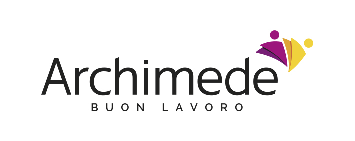

Il 28 aprile 2018 ci siamo incontrati con i membri di Impact Hub
ed alcuni ospiti, allo nuovo spazio giovani di via Cassoli 1 (Reggio Emilia)
per parlare di come poter interfacciarci al meglio sul mondo del lavoro.
Gli ospiti dell'incontro erano per lo più responsabili di aziende importanti, come, per esempio, Archimede.
Archimede: è un'agenzia per la ricerca di lavoro che mette in contatto offerta e domanda nel mondo del lavoro.
Con loro abbiamo parlto dell'organizzazione del corricolum e ripreso gli aspetti del colloquio di lavoro
Corricolum: deve essere scritto in modo sintetico e semplice, ben impaginato e soprattutto senza errori di ortografia.
Nel corricolum devono essre riportati i nostri dati anagrafici, i nostri contratti di lavoro precedenti, le nostre esperienze e, per ultimo ma non meno importante, le nostre passioni.
Per un datore di lavoro è fondamentale sapere quali sono gli interessi delle persone che deve assumere.

Nella seconda parte della giornata hanno organizzato un'attività basata
sull'utilizzo di LinkedIn.
Cos'è LinkedIn?
LinkedIn è un servizio web di rete sociale, gratuito, impiegato principalmente nello sviluppo di contatti professionali,
tramite la pubblicazione e la diffusione del proprio curriculum.
Lo scopo principale del sito è consentire agli utenti registrati di mantenere una lista di persone conosciute e ritenute affidabili in ambito lavorativo.
Una volta spiegatoci cosa fosse, ci hanno diviso in gruppi e ci hanno fatto creare il nostro primo profilo LinkedIn.